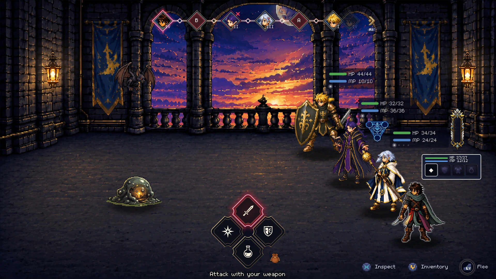
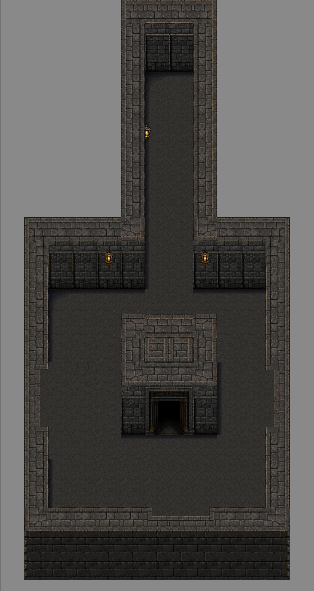
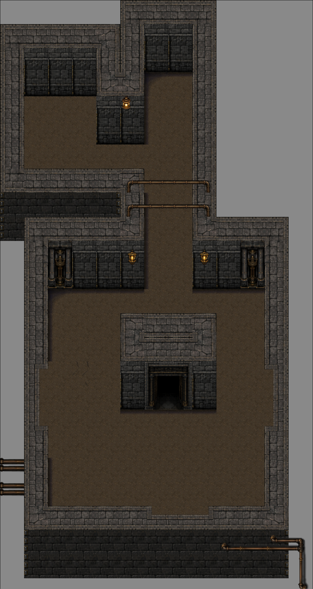

Independent Product · Founder & Product Owner · 2026–Present
Tower Delver: From Original Concept to Tested, Playable Vertical Slice
I own the vision, scope, requirements, trade-offs, playtesting, and acceptance decisions. AI development agents extend my capacity across implementation, testing, and documentation.
Party-based JRPG roguelite · TypeScript · Phaser 4 · Vite · Vitest · Playable vertical slice in active development
-
10
Major player-facing systems delivered
-
4-stage approval gate
Build · Typecheck · Automated Test · Owner Playtest
-
11
Human-led curation rounds

See the product, then see how it was delivered
This short demo shows the current playable loop: exploration with visible threats, turn-based class combat, and the run systems behind them. It can be understood without audio, and a scene-by-scene video description is available below.
Video description
A scene-by-scene description of the demo, for anyone who cannot or would rather not watch it.
- The demo opens in top-down exploration. The party moves through a tower room with an enemy visible on screen ahead. Threats are seen before they are fought, not hidden or randomly triggered.
- Contact with the enemy transitions the view into a turn-based battle, against a slime and a bat. A turn-order timeline runs along the top of the screen and each party member has its own health and magic readouts.
- The Wizard casts Firewall. A burn status is applied to the slime and is visible on it as the fight continues.
- The battle is won and a character levels up.
- Exploration resumes. The player touches a Shrine of Blood and pays some of the party's health for its effect.
- A second encounter follows, against a gnawer, fought with the party already at low health and poisoned. It shows that the run's accumulated damage and status effects carry into the next fight rather than resetting.
- Exploration resumes again, and a trap in the room damages the player.
- In a battle room, the player opens a chest and receives an item.
- The demo ends.
Executive summary
Tower Delver began with a practical question: could one person validate a strategically deep game loop without an engineering, design, and QA team? I defined the vision, roadmap, scope, requirements, acceptance criteria, and approval gates, and directed AI development agents to accelerate planning, implementation, testing, and documentation. The result is a playable vertical slice (a complete run from party selection through exploration, turn-based battles, progression, and a boss) spanning ten major player-facing systems. Implementation milestones were governed by a four-stage approval gate: build, typecheck, automated tests, and owner playtesting. AI increased execution capacity; product direction, trade-offs, quality judgment, and approval stayed mine.
Product problem and MVP thesis
Party-based RPGs earn their depth from class and combat strategy, but proving it normally takes a team's worth of engineering capacity. Roguelites earn replayability from procedural variety, which erodes the deliberate encounter design the genre depends on. Working alone, I had a hard capacity ceiling. The riskiest assumption was never whether one system could be built, but whether exploration, visible threats, tactical battles, progression, and room-to-room choice would hold together as one loop worth playing.
So the complete loop became the MVP, not a narrow polished slice of it. If it was compelling before final art and production content, the product would justify deeper investment; if not, I would find out early and cheaply. I built end-to-end behavior first, then improved individual systems through gated milestones and playtesting. What you see here is the current in-development state, not final production art.
Decision demonstrated: I validated the full player loop before treating the current visuals as final.
Human-directed AI workflow
I treated AI as an execution layer inside a product system, not as the product owner. Each workstream began with a bounded problem, explicit scope and non-goals, source-of-truth rules, acceptance criteria, and a stop gate. Agents proposed alternatives, implemented approved work, generated tests, and audited consistency. I reviewed the output, playtested the product, rejected inadequate results, changed the requirements when the evidence justified it, and approved or rejected milestone results.
I used ChatGPT for product analysis and requirements development, and Claude Code for repository-based implementation, testing, and audit work.
- 1Frame the problem
- 2Define scope, non-goals, and acceptance gates
- 3Direct AI-assisted implementation
- 4Run automated validation
- 5Owner review and playtest
- 6Revise or approve
Revise returns the work to step 2. Approve closes the milestone.
Work begins with the owner framing a problem and defining scope, non-goals, and acceptance gates. AI agents assist with execution and automated validation. The owner reviews and playtests the result, then either revises the requirements or approves the milestone.
| I owned | AI assisted with |
|---|---|
| Product vision, priorities, scope, and non-goals | Requirements analysis and draft alternatives |
| Product and architecture decisions | Implementation and refactoring proposals |
| Acceptance criteria and approval gates | Automated-test creation and audit support |
| Playtesting and quality judgment | Documentation and consistency analysis |
| Approval, rejection, and accountability | Execution inside approved constraints |
Risk addressed: explicit gates kept technically complete AI output from becoming accepted product behavior without human review.
Sanitized excerpt from a Tower Delver milestone contract
Quoted from the contract · source wording preserved; punctuation and formatting normalized for this page; square brackets mark a redaction
Implement [this milestone] ONLY. Do not start [the next milestone]. Stop for user approval when done. Non-Goals (do NOT implement) • Enemies or rewards in the room; route/room-type redesign; battle or Pause-menu heal changes. Acceptance Criteria • Held/repeated/overlapping input produces exactly one transaction, one SFX, one green glow. Verification Checklist (manual) • Save + quit + Continue → still used; party HP/MP + used state restored together. Do not mark [the milestone] Complete unless every acceptance criterion is implemented AND user-verified. Never claim user-approval without explicit user approval in chat.
Paraphrase, written for this page, not from the document
Every milestone got one of these before any code was written. 255 of them are in the repository. The non-goals mattered as much as the goals: they are what stopped an agent from helpfully expanding the work.
In these documents, “user” means me, the owner. It is not a reference to a player.
Choosing the right amount of automation
Situation
Tower Delver needed more battle-room variety than I could efficiently hand-author at the desired pace. Full runtime generation promised near-infinite combinations, but also harder autotiling, a runtime validation and reroll apparatus, determinism concerns, and the risk that technically valid rooms would still read as flat.
Options
Three designs, not one fork in the road. The first assembled rooms at runtime from prefab chunks; I rejected it because it could not deliver deliberate set-pieces. The second kept runtime generation over a 12–18-piece authored library whose content overhead was disproportionate for a solo product; I replaced it within a week.
Decision
The third moved generation offline: generate, curate by hand, validate, then admit the room to an approved runtime pool. A tool emits seeded candidates with structural wiring, hazards, lighting, and lint results. I correct composition, readability, and atmosphere before a room enters the playable build. Approved rooms stay static, editable files at runtime.
Result
Runtime validation and reroll machinery never entered the current architecture. A passing validator was never treated as approval: eleven rounds of curation converged the generator's room grammar, and every candidate was hand-adjusted before it entered the runtime pool. Each records the generator revision and seed behind it.
Generated candidate · Structurally valid, not approved

Owner-curated room · Readability, structure, and atmosphere refined

- Warm earth floor replaces cold gray stone: 128 changed floor tiles; the single largest readability and atmosphere change.
- Upper-left chamber built out: a structural change, not decoration; the candidate has a bare corridor where the curated room has a room.
- Wall sconces added: 4 new wall-decor tiles; light sources read as objects, not just glow.
- Pipework added along the walls: 16 new foreground-prop tiles; environmental storytelling.
| Option | Strength | Cost or risk | Outcome |
|---|---|---|---|
| Runtime generation | Maximum variety | Validation, debugging, visual flatness, determinism | Rejected twice, pre-implementation; not in current scope |
| Hand-authored rooms | Maximum control | Slowest pool growth | Kept for special rooms |
| Offline generation + curation | Repeatable, with a human gate | Finite pool, review time | Selected |
Why this mattered: the most technologically ambitious option was not automatically the best product decision. The selected approach optimized for player-facing quality, inspectability, and maintainability.
Passing every automated check was not the same as being right
The clearest evidence that the review gate works is a defect automation could not have caught.
During owner playtesting for a later milestone, I found a pre-existing rule error: the game offered an escape option during a mandatory encounter. Automated checks could not exercise the relevant Phaser scene, so I blocked closure of the current milestone, traced the duplicated classification rule, directed the fix, and added the strongest feasible regression coverage.
What changed
- The battle screen re-derived encounter classification from the wrong input. The correction made the already-computed classification the single source of truth.
- Five regression tests were added, including a compensating source-level rail.
- That scene layer cannot be behaviorally exercised by the current automated runner. This is why human playtesting remains mandatory.
Sanitized excerpt from the Tower Delver validation policy
Quoted from the policy · source wording preserved; punctuation and formatting normalized for this page
The test suite is node-only and pure-logic. No test imports the game engine or instantiates a Scene. So the suite gives zero runtime coverage of: scene lifecycle, rendering, camera/zoom, input and controller handling, battle presentation and VFX, dialogue/menu interaction, and audio. A green full suite is NOT evidence that any of that works. When a change materially touches those areas, a manual in-game smoke test is required in addition, and it is the real gate, not a formality.
Paraphrase, written for this page, not from the document
I wrote this rule against my own interest. It is why the automated suite is never quoted here as proof that the game works, and why no milestone was approved without me playing it.
What changed after evaluation: the defect became a single-source rule, a regression test, and a standing reason the playtest gate is not optional.
Results and lessons
The product is a playable vertical slice spanning ten major player-facing systems: exploration, turn-based combat, classes and skills, progression, equipment and rewards, run structure, environmental hazards, shops and run economy, persistence, and a curated battle-room pool.
An automated logic suite covers combat math, progression, generation, and persistence. It does not execute Phaser scenes, rendering, input, or audio, so those layers require owner playtesting before milestone approval.
The lesson was not how to produce more output, but how to design a system that makes AI output reviewable, testable, reversible, and subordinate to product outcomes. AI accelerated delivery; judgment and accountability remained mine.
Product state and evidence verified August 2026.